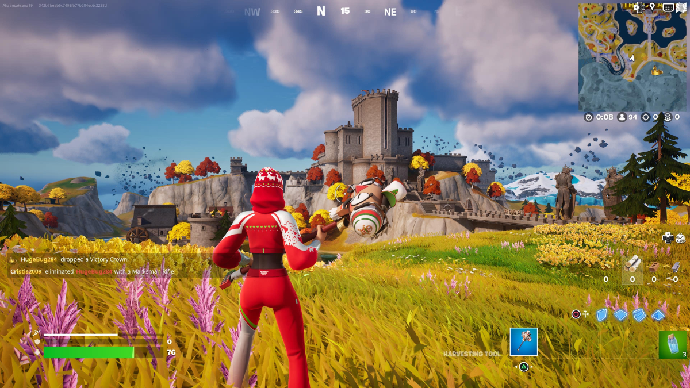

1 - Battle Royale
Os jogos do gênero Battle Royale são jogos on-line, que focam na sobrevivência em um mapa que diminui até restar apenas um jogador.
Jogos desse gênero estão no topo da lista por serem jogos competitivos, e por existirem muitos jogos assim em celulares, como os jogos Free Fire e PUBG.
Free Fire e PUBG. Fortnite é atualmente o battle royale mais famoso, com milhões de jogadores ativos todos os dias, e tendo acumulado diversos recordes,
como quando acumulou mais de 44 milhões de jogadores em um único dia, e um pico de 12,3 milhões de jogadores simultâneos durante um evento.
